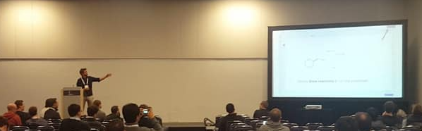

About
Photo: Ryan, NeurIPS 2018In February 2022, I joined EPFL as a Tenure-Track Assistant Professor in the Institute of Chemical Sciences and Engineering. The Laboratory of Artificial Chemical Intelligence (LIAC), which I lead at EFPL, works on AI-accelerated discovery and synthesis of molecules. Moreover, I am part of the NCCR Catalysis, a Swiss centre for sustainable chemistry research, education, and innovation. For information on PhD positions, contact me via Twitter or email.
I received my Bachelor’s and Master’s degrees from EPFL (École Polytechnique Fédérale de Lausanne, Switzerland) and I spent the last year of my Bachelor’s studies as an ERASMUS student at the University of Manchester. During my Master’s research, I had the opportunity to be a member of Prof. Nicola Marzari’s laboratory. There, I started the extraction of layered materials from inorganic crystalline compounds databases and calculated the binding energy of the layers, as well as the elastic constants of the parent crystals, with density functional theory. After graduating in October 2016, I completed the last months of my civil service performing experiments in the Functional Polymers laboratory at EMPA.
Since March 2017, I have been working for IBM Research – Europe in the Zurich lab, in the Cognitive Computing and Industry Solutions department and the Accelerated Discovery group lead by Dr Teodoro Laino. My main focus is on data-driven discovery and synthesis of novel molecules and materials. During this period, I also studied for one year at the University of Cambridge (MPhil in Physics), and I completed my PhD with Prof Jean-Louis Reymond as supervisor at the University of Bern. Now, I work as a postdoctoral researcher in accelerated discovery at IBM Research – Europe. My work is at the intersection between chemistry and machine learning. I develop tools with practical value for chemists.
What started as an intern project at IBM Research soon grew into something much more substantial. I was given the opportunity to stay and pursue my PhD studies, combining two things I love – machine learning and the discovery of materials and molecules. Ever since, my focus has been on applying novel machine learning methods to accelerate chemical synthesis, which is essential, for instance, for the development of new drugs.
Similar to humans, the machine learning models I use in my research learn from examples and extract recurring patterns. Once trained, the models can predict unseen entities. What fascinates me is that they can ingest all the scientific literature available within days, which would take a human more than a lifetime. One key success factor of my work is treating chemistry like a human language and casting chemical reaction prediction as a translation task.
In August 2018, our team presented a platform called IBM RXN for Chemistry at the ACS fall meeting in Boston (ACS meeting video). Through RXN, my research became freely accessible to anyone in the world. The feedback surpassed all expectations. For the first time, professionals and students could predict chemical reactions in an instant, and without having any coding skills. Since the release, more than 15k users have joined the platform and generated over 1M reaction predictions. Today, the RXN model still performs state-of-the-art on various reaction prediction benchmarks. In fall 2019, we added a retrosynthesis planning tool, which proposes step-by-step recipes for a given target molecule starting from commercially available precursors. Those steps can then automatically be converted into the required actions for a human or robot to run the reactions. Check out the following link, if you want to know more about RoboRXN, the most recent addition to the RXN project.
Most of the models I have developed are accessible through the IBM RXN for Chemistry platform or on RXNMapper.ai. Code is available from my GitHub account or the one of rxn4chemistry.
Whenever I take a break from doing research, I like to travel, hike and take pictures (mostly landscapes). I often wake up earlier than normal to reach incredible locations before sunrise and have the best light conditions. I love the mountains. What's better than waking up in a tent in the middle of an epic alpine panorama?
Kan Thar Yar Bridge, Hpa-An, Myanmar - One of the most beautiful countries I have visited. Padar Island, Indonesia - Blue hour. Bromo Tengger Semeru National Park, Indonesia - Sunrise over the sea of sand. (Pre)Alps, Switzerland - The mountains in our backyard.Some of our travels/hikes are described on UfUDevo.com. More photos can be found on Instagram and 500px.